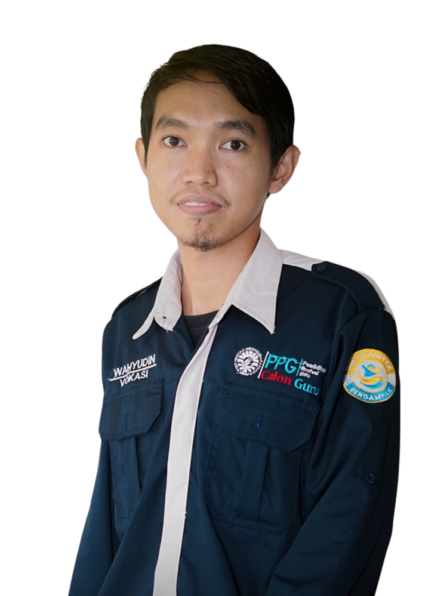
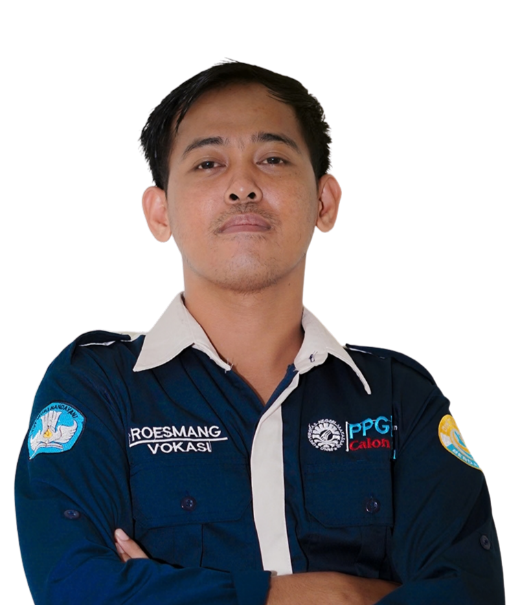
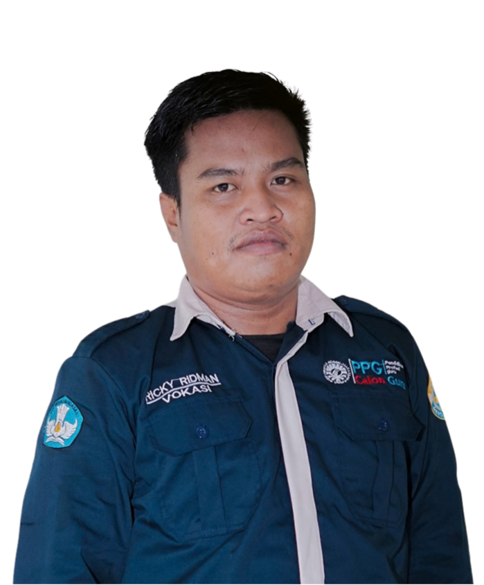
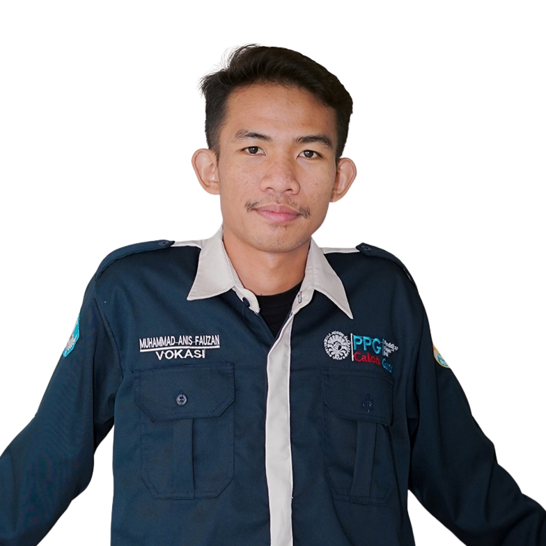
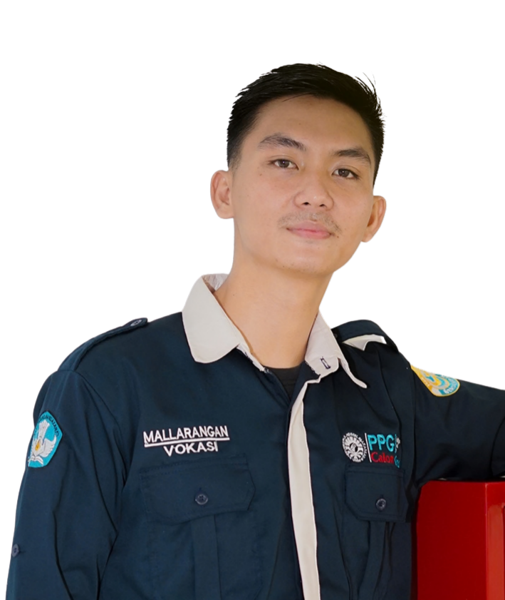
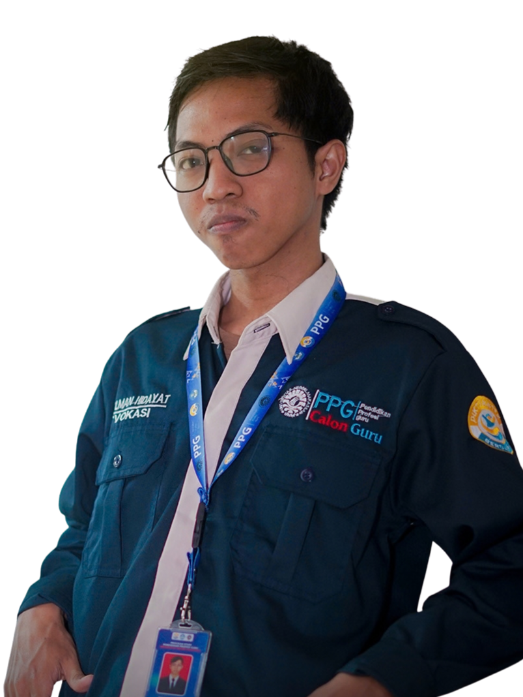
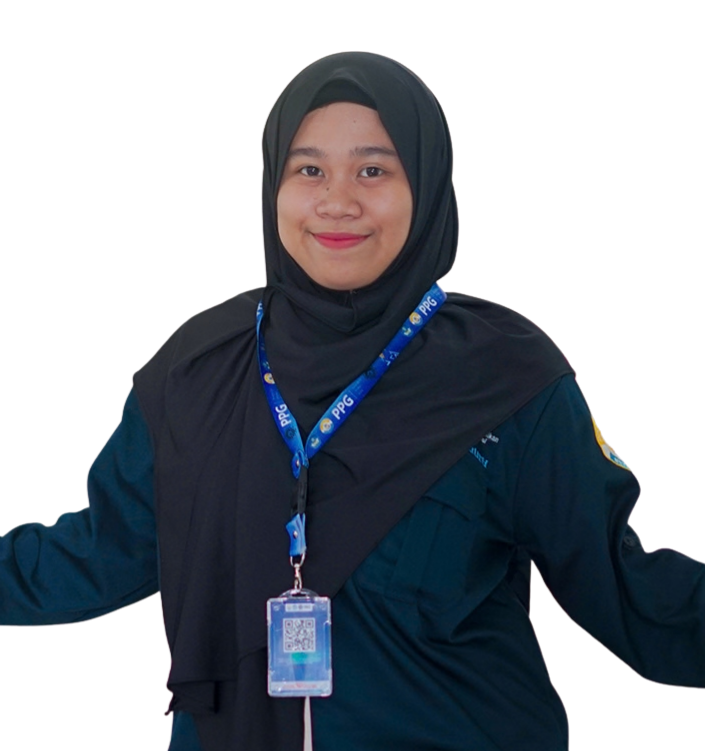
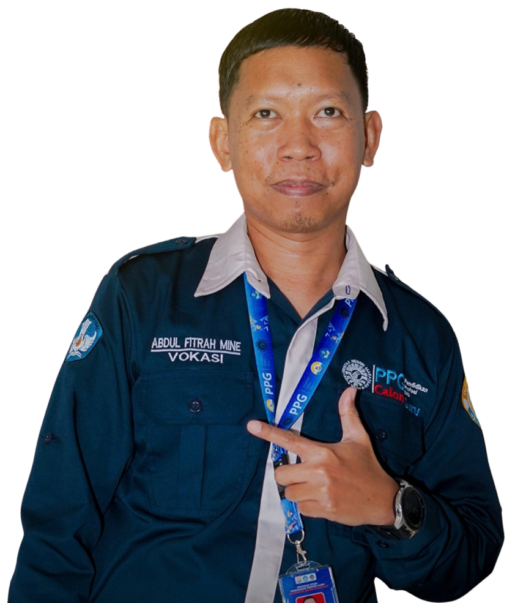

Tim VoSisTer_IoT
Dosen pendamping, dua dosen pembimbing lapangan, dan delapan anggota di balik proyek lintas bidang ini.

Prof. Dr. Ir. Fiskia Rera Baharuddin, S.T., M.T.
Memberikan arahan metodologis, mengevaluasi ketercapaian target, dan membimbing penyusunan refleksi kepemimpinan.

[Nama DPL 1]
Mendampingi tim selama pelaksanaan proyek di sekolah dan memantau kegiatan di lapangan.

[Nama DPL 2]
Mendampingi tim selama pelaksanaan proyek di sekolah dan memantau kegiatan di lapangan.

Wahyudin
Memimpin jalannya proyek, membagi tugas, memantau jadwal, dan menjadi penghubung tim dengan dosen pembimbing serta pihak sekolah.

Roesmang
Memastikan rangkaian dan cara kerja sistem starter pada trainer sesuai standar otomotif, dari kunci kontak, relay, dan solenoid sampai motor starter.

Ricky Ridman
Merancang dan membangun rangka serta panel trainer agar kokoh, rapi, aman dipindahkan, dan mudah dipakai praktik.

Muhammad Anis Fauzan
Menyusun modul, lembar kerja, dan materi pendukung supaya trainer bisa langsung dipakai dalam pembelajaran di kelas.

Mallarangan
Menyusun dan menjalankan uji fungsi trainer serta aplikasi absensi, mencatat hasilnya, dan memastikan produk siap didemonstrasikan.

Salman Hidayat
Merakit dan mengintegrasikan ESP32, sensor, dan relay kontrol agar trainer bisa dipantau dan dikendalikan lewat smartphone.

Andi Hanifah Putri Rani
Memprogram mikrokontroler dan aplikasi, mengelola database absensi, serta menghubungkan notifikasi kehadiran ke WhatsApp kurikulum.

Abdul Fitrah Mine
Menangani wiring diagram, sekring, dan kestabilan daya, serta memastikan keselamatan kerja selama perakitan dan pengujian.